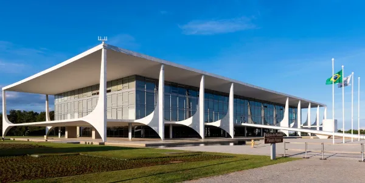

O Distrito Federal, onde está localizada a capital do Brasil, Brasília, é uma região rica em atrações turísticas, especialmente em termos de arquitetura modernista e monumentos emblemáticos. Aqui estão alguns dos principais pontos turísticos do Distrito Federal:
Bem-vindo ao Distrito Federal

Esplanada dos Ministérios: Uma ampla avenida onde estão localizados os prédios dos ministérios do governo brasileiro, além do Congresso Nacional e da Catedral Metropolitana de Brasília. A arquitetura modernista de Oscar Niemeyer é uma das características marcantes da região.

Congresso Nacional: Um dos símbolos mais reconhecidos de Brasília, o Congresso Nacional abriga as duas casas legislativas do Brasil, a Câmara dos Deputados e o Senado Federal. Seus edifícios em forma de cúpulas gêmeas são uma obra-prima da arquitetura de Oscar Niemeyer.

Catedral Metropolitana de Brasília: Projetada por Oscar Niemeyer, a Catedral Metropolitana é um impressionante edifício religioso com uma estrutura em forma de hiperboloides e vitrais coloridos. Seu interior abriga obras de arte sacra.

Palácio do Planalto: A sede oficial da presidência do Brasil, o Palácio do Planalto, é um edifício imponente projetado por Oscar Niemeyer. Ele abriga os gabinetes presidenciais e é palco de importantes eventos políticos